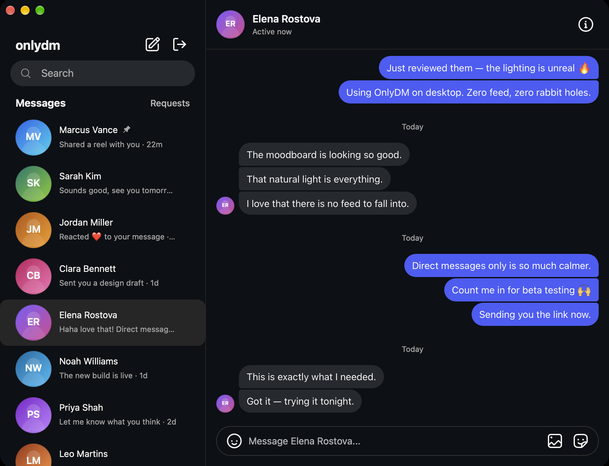

OnlyDM — Desktop Client for Instagram DM
OnlyDM is a lightweight desktop client for Instagram DM. Cut out infinite feeds, algorithmic reels, and notification fatigue. Experience instant, distraction-free messaging.

Interface preview with sample conversations.
Everything you need to talk. Nothing you don't.
OnlyDM is designed from the ground up to strip away engagement traps and deliver a laser-focused desktop client.
Feed-Free by Design
Instagram algorithms are built to steal your attention. OnlyDM intercepts redirects toward the home feed (/) and sends you back to /direct/inbox/. The Notes tray and account switcher are removed too, so the inbox stays a single, quiet workspace.
Silent Call Handling
Incoming call popups and their looping ringtones are muted and hidden automatically. Call buttons and the in-app voice recorder are hidden too, while voice messages and other media you receive still play normally.
Rust & Tauri v2 Architecture
Instead of bundling a heavy 150MB Chromium instance, OnlyDM renders through your operating system's native webview engine, yielding negligible idle RAM usage.
Smart External Link Routing
User profiles (/username) and external links open in your default browser, while shared posts, reels, and stories stay in the app. Your OnlyDM window remains a dedicated messaging space.
Native macOS Integration
A real macOS menu bar with keyboard shortcuts, window state restore, Dock reopen, and a localized logout dialog covering 16 languages.
Built for Speed and Efficiency
Compare OnlyDM's compiled Rust footprint with traditional Electron-based chat wrappers.
| Metric | OnlyDM (Tauri v2 + Rust) | Electron Web Wrappers |
|---|---|---|
| Memory (Idle) | 35 MB – 55 MB | 400 MB – 850 MB |
| Installer Size (.dmg) | ~12 MB | 110 MB – 180 MB |
| Cold Launch Latency | < 400 ms | 2.5 s – 4.0 s |
| Feed Distraction Block | Native Interception | None (Full feed loaded) |
| Background Ringtones | Muted Automatically | Loud Audio Prompts |
Typical idle ranges on Apple Silicon. Actual usage varies with conversation count and media. Electron figures are representative ranges, not benchmarks of every client.
git clone https://github.com/PW486/only-dm.git && cd only-dm
npm install && npm run build
Download OnlyDM Today
OnlyDM is 100% open-source under the MIT license. Grab the ready-to-run release or build it yourself.